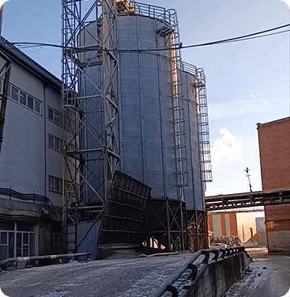
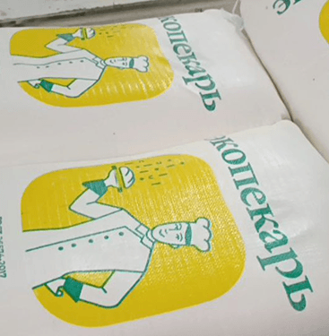
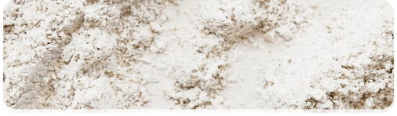
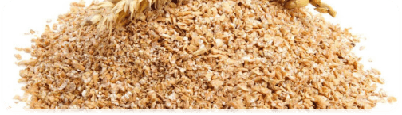
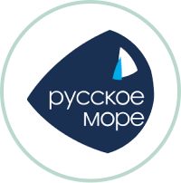
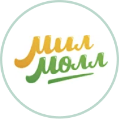
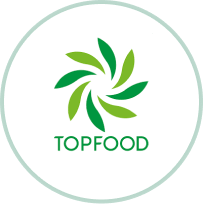
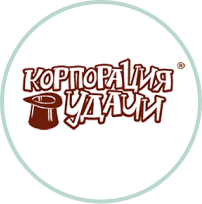

ООО «Купец» — производитель муки высокого качества.
Дата основания: 20 апреля 2022 года.
Основной вид деятельности: производство продуктов мукомольной и крупяной промышленности.
«Экопекарь» — наша фирменная торговая марка, символизирующая:
• натуральность и экологичность продукта;
• приверженность традициям качественного помола;
• заботу о здоровье потребителей.
Вся продукция изготавливается в соответствии с ГОСТ и имеет необходимые декларации о соответствии.
Наше производство:
• Современное оборудование для тонкого помола.
• Строгий контроль качества на каждом этапе.
• Соблюдение санитарных и экологических норм.
Сырьё:
• Используем только проверенное и безопасное зерно.
• Партнёрские поставки от надёжных сельхозпроизводителей.
• Входной контроль качества сырья.
ООО «Купец» — это современные инновационные технологии,
гарантирующие качество и безопасность производимых продуктов питания.
Мы гордимся тем, что тысячи клиентов доверяют нашей продукции, и продолжаем ежедневно работать над её
совершенствованием.
«Здоровое зерно — вкусная выпечка — довольные клиенты!»


Мука пшеничная хлебопекарная «Экопекарь»
высшего сорта — это продукт, изготовленный из
мягкой пшеницы.
Соответствует требованиям
межгосударственного стандарта ГОСТ
26574-2017
Срок годности: 12 месяцов
Фасовка 50 кг

Пшеничные пушистые отруби(кормовые) — это
побочный продукт переработки зерна пшеницы
в муку, который сохраняет естественную
текстуру и максимальную питательную
ценность. Они отличаются лёгкой, воздушной
структурой и широко используются в
животноводстве.
Срок годности: 6 месяцов
Фасовка 22 кг или насыпь.
Оптовые поставки муки
Индивидуальный подход к каждому клиенту
Гибкие условия оплаты и доставки
Поддержку документации
(декларации, сертификаты)
Хлебопекарные предприятия
Сети розничной торговли
Предприятия общественного питания
Фермерские хозяйства (отруби)



